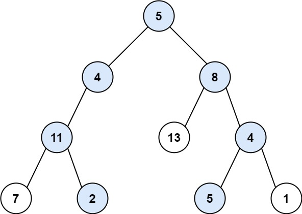
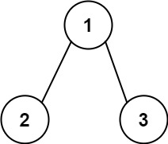

二叉树中和为某一值的路径
题目
给你二叉树的根节点 root 和一个整数目标和 targetSum ，找出所有 从根节点到叶子节点 路径总和等于给定目标和的路径。
叶子节点 是指没有子节点的节点。
示例 1：

输入： root = [5,4,8,11,null,13,4,7,2,null,null,5,1], targetSum = 22<br>输出： [[5,4,11,2],[5,8,4,5]]
示例 2：

输入： root = [1,2,3], targetSum = 5<br>输出： []
示例 3：
输入： root = [1,2], targetSum = 0<br>输出： []
提示：
- 树中节点总数在范围
[0, 5000]内 -1000 <= Node.val <= 1000-1000 <= targetSum <= 1000
/**
* Definition for a binary tree node.
* function TreeNode(val, left, right) {
* this.val = (val===undefined ? 0 : val)
* this.left = (left===undefined ? null : left)
* this.right = (right===undefined ? null : right)
* }
*/
/**
* @param {TreeNode} root
* @param {number} target
* @return {number[][]}
*/
var pathSum = function(root, target) {
};参考答案
解题思路
深度优先遍历
- 每层都三个参数，一个是当前结点，一个是 target 剩余值，一个是总路径数组
- 当往二叉树深处进行遍历时，如果 target 剩余值跟结点值相等且左右子树为空(叶子结点)，则满足要求，往 result 压入当前总路径数组 path
- 对于左右子树不为空的结点，继续往左或右子树进行遍历，直到叶子结点
/**
* Definition for a binary tree node.
* function TreeNode(val, left, right) {
* this.val = (val===undefined ? 0 : val)
* this.left = (left===undefined ? null : left)
* this.right = (right===undefined ? null : right)
* }
*/
/**
* @param {TreeNode} root
* @param {number} target
* @return {number[][]}
*/
var pathSum = function (root, sum) {
if (!root) return [];
const res = [];
const dfs = (root, sum, path) => {
if(!root) return;
// 到了叶子节点并且当前节点的值跟剩余sum相等，则推入结果集中
if (root.val === sum && !root.left && !root.right) {
res.push(path);
}
// 路径中加入当前节点的值
path.push(root.val);
dfs(root.left, sum - root.val, path.slice());
dfs(root.right, sum - root.val, path.slice());
};
dfs(root, sum, []);
return res;
};